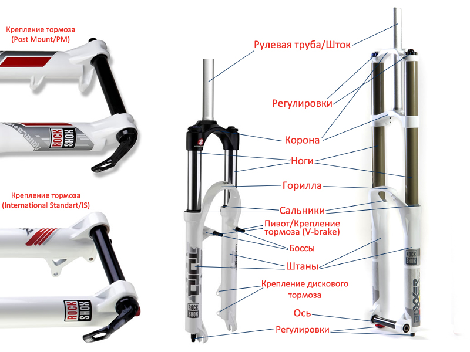
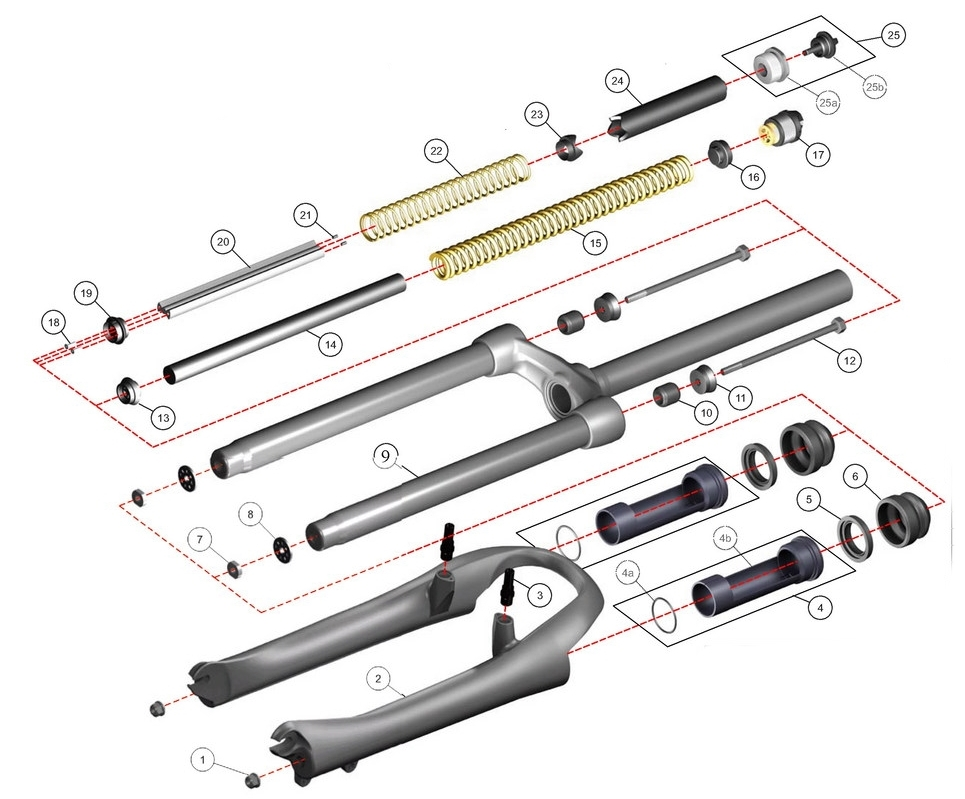
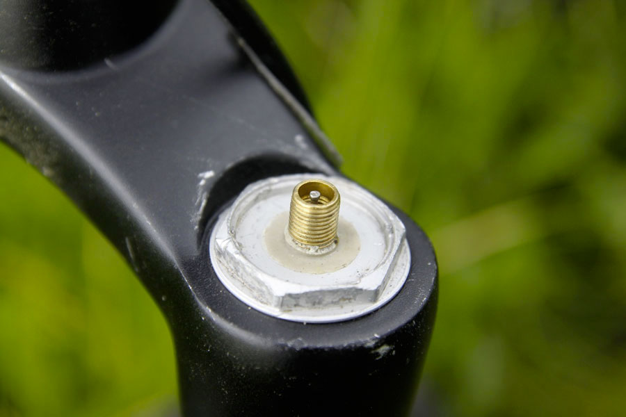
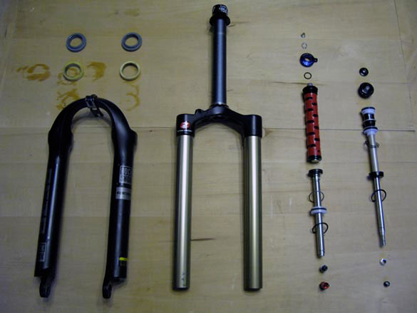
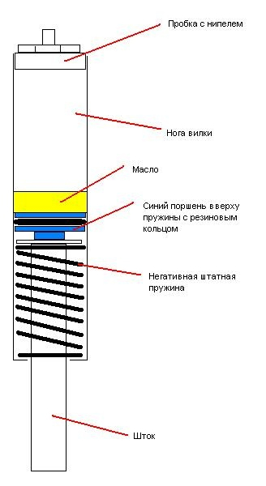

Всё о велосипедах
Как писалось ранее на велосипеды могут устанавливаться два типа вилок – амортизационная и жесткая. Если велосипед типа ригид, то в данной графе будет указываться «жесткая», а вот с амортизационными немного сложнее. Там есть некоторое разнообразие используемых амортизаторов. Далее вкратце рассмотрим конструкцию и возможные варианты исполнения.
Амортизационная вилка велосипеда обычно состоит из рулевой трубы, короны, гориллы, ног вилки, штанов, манжет и амортизаторов. Это одна из самых распространенная схем передней вилки велосипеда. И как писалось ранее, главное отличие – используемые амортизаторы. Далее мы в порядке улучшения характеристик амортизации (а соответственно и увеличения цены) рассмотрим виды вилок.
Пружинные – самые дешевые и малоэффективные. Очень подвержены раскачке. Спорный вопрос, стоит ли их вообще устанавливать на велосипед.
Пружинно-эластомерные – амортизаторы начального уровня. Представляют собой металлические пружины, внутри которых находятся демпферы – эластомеры. Достаточно дешевый вид. Отличаются от остальных надежностью, неприхотливостью и простотой обслуживания, которое заключается в периодической чистке и замене смазки. К недостаткам можно отнести не самую хорошую амортизацию и больший вес за счет стальной пружины.
Воздушные – амортизаторы в которых используется воздушная пружина (вместо классической железной). Принцип действия: при нагрузке на вилку шток приводит в движение поршень, который двигаясь вверх, сдавливает воздух внутри герметичной емкости. Жесткость пружины можно и нужно периодически настраивать путем подкачки с помощью насоса. Этот вид хорошо отрабатывает все неровности дороги. Его главным недостатком является низкий ресурс (по сравнению с остальными) и плохая ремонтопригодность. Особенно сильно это сказывается в дальних поездках.
Воздушно-масляные – принцип действия и характеристики похожи на воздушные вилки, с одной разницей, что в качестве демпфера выступает масляный картридж. Показывают хорошую работу даже в экстремальных заездах. Имеют огромное количество регулировок, что позволяет подстраивать различные характеристики амортизации. Устанавливаются на дорогие модели велосипедов спортивного уровня.
Масляно-пружинные – одни из самых надежных, качественных и дорогих амортизационных вилок. Конструктивно состоят из металлической пружины и масляного демпфера. Достаточно надежны. Главным недостатком можно назвать цену.
